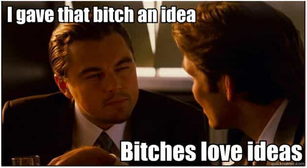

Eric is a self-employed artist who writes about modern culture. You can follow him on twitter.


There is a myth that you have to be good-looking to get laid with online dating. While it definitely helps, it’s not required. Even if you haven’t been gifted with a face so beautiful that makes the baby Jesus weep at it’s glory (like me), you can still get laid with online dating using just your words.
Even if you don’t do online dating, these principles apply to any writing or storytelling you do, in person or in text. If you can write, you can seduce. Here’s how:
The classic writing advice “show, don’t tell” also applies to online dating. For example, look at these two profiles:
1) I’m the class clown among my friends. I’m really good at making people laugh, and like to have a good time.
2) For our first date, we can go anywhere except McGrady’s, because I’m banned for life after firing a plastic arrow into the owner’s eye’s arm on Halloween, while dressed as Cupid. In my defense, I was aiming for his girlfriend, but confessing to flirting with his girl probably won’t get me back in.
The first guy is about as funny as dead puppies. The other never has to explicitly tell us he’s funny or does crazy stuff, because he shows us. Always be show in your profile, never tell.
Consider this writing from Roosh’s 30 Bangs:
We had sex fifteen minutes later. It was fine, but her pussy labia were beat up and stretched out, looking like old roast beef.
The next morning she said, “I don’t usually do this.”
By describing the state of her pussy, Roosh shows the girl was lying. If he simply told his readers “but seriously, that girl was really slutty,” they might not believe him. Through providing the right details, he leads the reader to his conclusion, while making them think it was theirs.

Good writing can lead people to things you couldn’t explicitly say. I’ve actually dropped full stories and dialogues into my profile. For example, imagine a profile opening with this:
Me: Hey, what should I put in my profile?
Indian Roommate: Write that you always practice safe sex. I know because you leave your Magnum condoms littered all over our shared bathroom.
Me: My seed is powerful. It raises the vibration of our toilet bowl. Or your toothbrush, when my aim is bad.
Indian Roommate: I hope you don’t get laid, and I never have to clean that up again.
If I wrote “I’m funny, get laid a lot, and have a big penis,” no one would ever believe me. Because I used a story, it wasn’t qualifying or approval seeking, and girls pick that information up from the details. (Though this example borders on being to overtly sexual. See point 4 below.)
From this story, you also know I don’t take myself too seriously, and don’t apologize for anything. Which leads me to…
The story you tell shows girls who you are.
A guy who asked me for online dating advice had this on his profile:
I grew up in Brazil.
I’m certain that was an interesting experience, but without a story, it’s just a fact. His whole profile was a list of facts. Facts are boring. Here’s a rewrite I’d do knowing nothing about him:
I was born in the jungles of Brazil. My childhood was like The Jungle Book, if The Jungle book had cell phones and that no one’s parents were dead.
A girl reading that knows it’s probably bullshit, but it’d make her laugh, show her he’s funny, and that he has interesting experiences to share.
Take it a step further, and you can convey perspective. For example, look at these two different versions:
I grew up in Brazil, the land of jiu-jitsu and models, where the men have big muscles, and the women have bigger asses. It was heaven for a teenager with high testosterone.
[…]
I grew up in Brazil. I feel growing up in another country has allowed me to acknowledge my own privilege as a white cisgendered male, and appreciate the diversity of other less patriarchal cultures.
Just from those two sentences, I’ll bet you can picture a whole character. This kind of writing filters for girls who want to fuck you. A feminist who flicks her iPhone more than her clit won’t message the first guy, but girls who party might. The second guy will filter out straight women.
If you write well, it doesn’t matter what you talk about. I like nerdy and cosplay girls, so I have two comic-con stories in my profile. Writing this way doesn’t just get more girls, it gets the type of girls you prefer.
You profile should be short and flow, like a burst of tight twitter messages.
Don’t worry about answering profile prompts. Profiles are like girls, you don’t have to give them a direct answer. The goal isn’t to tell your life’s story, it’s to hook – to get women to invest their attention.
For example, under “favorite books, movies, etc.” most people just list shows – just facts. Try writing something like:
I showed an old girlfriend my favorite horror movie, and she shoved me out of bed during her dream that night because she wanted to “save me from the bad guys.”
If you write that, expect a couple messages asking “lol – what movie did you show her?” By leaving out a crucial detail, or not telling the end of a story, you leave an open thread for women to start a conversation.
Online attention spans are short. You have to hook from the first line of your profile – and keep hooking. I stack my profile with about a dozen different twitter sized anecdotes girls can ask me about.
Humor is the quickest way to hook. If it’s funny, girls will keep reading.
If it doesn’t hook, delete it. Less is more. Long paragraphs only work if every part of them hooks. Girls will disqualify you for one bad line, but it might take three to a message. Keep track of which things girls frequently ask you about, and which never get commented on. Revise regularly.
Speaking of giving her a reason to talk to you…
People forget that Tucker Max initially became famous from a hook-up application on his website – i.e. an online dating profile. In it, he wrote girls could come over to do his laundry for him. It wasn’t because he really needed his laundry done (though a nice bonus), but because girls felt slutty if they came over just for sex.
There’s a reason people say “let’s get coffee sometime” rather than “let’s talk for thirty minutes before walking back to my place for naked thrusty time.”
Giving an alibi (“I’m just coming over to do laundry”) allows girls who don’t feel comfortable directly seeking a hook-up to rationalize meeting you, the same way inviting a girl back to your place to finish a bottle of wine is more likely to work, than just inviting her back for sex.
Any artform, cool activity, or interesting place you’d like to share makes a good alibi. Get creative.
So you’ve got a killer profile that hooks, and shows girls who you are. How do you write the first message? The same way you wrote a profile – except you only need one twitter sized message that hooks. For inspiration, check out delicioustacos list of 44 OKCupid Openers, but write your own to filter for your personality.
It doesn’t have to be long. It just has to hook. The first thing any girl will do if your message piques her interest is go read your profile – which will be tight. You can simply ask a girl out, if you write well. I’ve gotten laid from this (not original) opener:
You seem attractive and consequently I would like to explore the possibility of enhancing your life by means of exposure to my awesomeness.
All I really said was “you’re cool, I’m cool, let’s fuck,” but the writing hooks, and shows who I am.
The goal of messaging is to get a number or meetup. The moment you hook, go for the number. If your first message doesn’t hook or you get a shit-test, pass the shit test and hook first. An example:
Girl: I don’t know… Will I regret giving you my phone number?
Me: For sure. Years from now you’ll look back and ask yourself, “why did I have that man’s children?”
Girl: Hahahaha, okay it’s [number]
Once you meetup, treat it like a regular date. The girl is already hooked, knows who you are, and is into you All you have to do is close and enjoy the passive stream of women flowing into your life.
Read More: Is Online Dating Ruining Game?